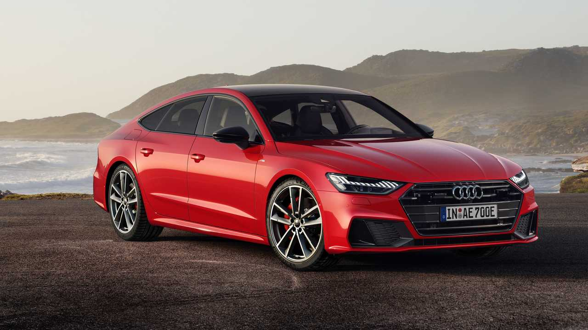

Audi A7

ÖNE ÇIKAN ÖZELLİKLER
Audi A7 TEKNİK BİLGİLER
Hem prestij, hem güç, hem dominant marka algısı, hem de sportf sürüş hem de ailesine yetecek geniş alan isteyenlerin reçetesi Audi A7 Sportback. Audi’nin 4 kapılı modeli A7, her açıdan dikkat çekici bir otomobil. Peki, yeni Audi A7 Sportback nasıl?
Yeni Audi A7 Sportback için söylenecek ilk söz, selefinin ana tasarım dilini koruyor olması. Arka kambur sırt ve uzun motor kaputu aynen devam. Motor kaputu üstündeki keskin kat izleri ise yeni. Daha geniş bir görünüme kavuşan ön panjur, HD Matrix LED farlar, güçlü bir ifade vermiş. Tek parça tasarımlı LED spotlar ise iti ve vurgulu. 120km üzeri hıza çıktığınızda bagaj kapağı üstündeki spoyler yanıp sönüyor. Havalı işler yani…
---------------------------------------------------------------------------------------------------------------------------.
SÜRÜŞ KONFORU
ÖDizel Audi A7’nin motoru güçlü. Hem motor hem de şanzıman tepkileri çok iyi. Dengeli süspansiyon, onun ana karakteri.
--------------------------------------------------------------------------------------------------------------
Audi A7 MOTOR ÖZELLİKLERİ
Motor Tipi ve Konumu: V, turbo, önde ve uzunlamasına.
Yakıt Türü: Dizel
Silindir/ Subap Sayısı: 6/24
Silindir Hacmi: 2967cc
Maksimum Güç: 210kW/ 286 HP 3500 d/d
Maksimum Tork: 620Nm 2250-3000 d/d
----------------------------------------------------------------------------------------------------------
Audi A7 HIZLANMA VERİLERİ
Maksimum Hızlanma: 250km/s
0-50km/s Hızlanma: 2,1 saniye
0-80km/s Hızlanma: 4,1 saniye
0-100km/s Hızlanma: 5,8 saniye
0-120km/s Hızlanma: 8,1 saniye
0-130km/s Hızlanma: 9,5 saniye
0-400m: 14,1 saniye
----------------------------------------------------------------------------------------------
Audi A7 BOYUTLARI
Uzunluk: 4969mm
Genişlik: 1908mm
Yükseklik: 1422mm
Bagaj Hacmi: 535 litre
-------------------------------------------------------------------------------------------